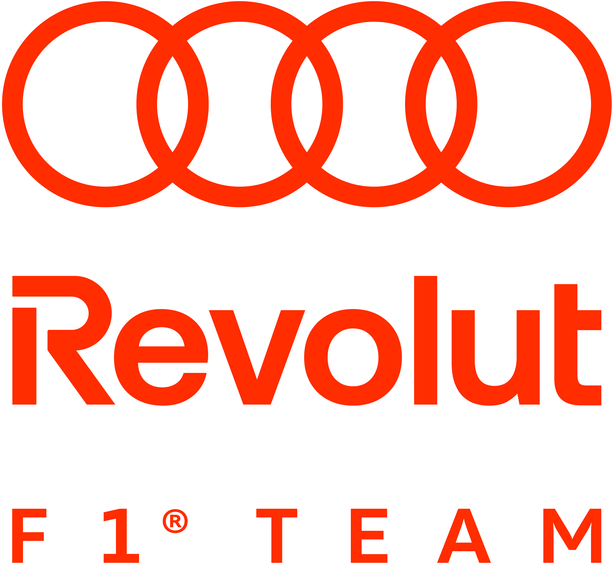
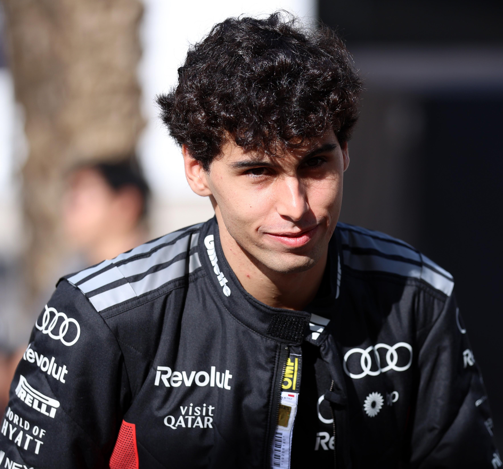
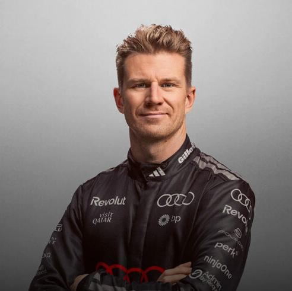
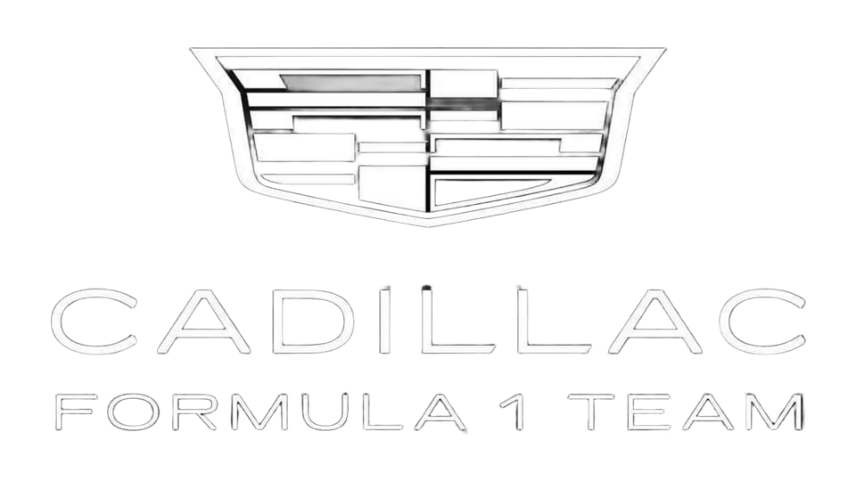
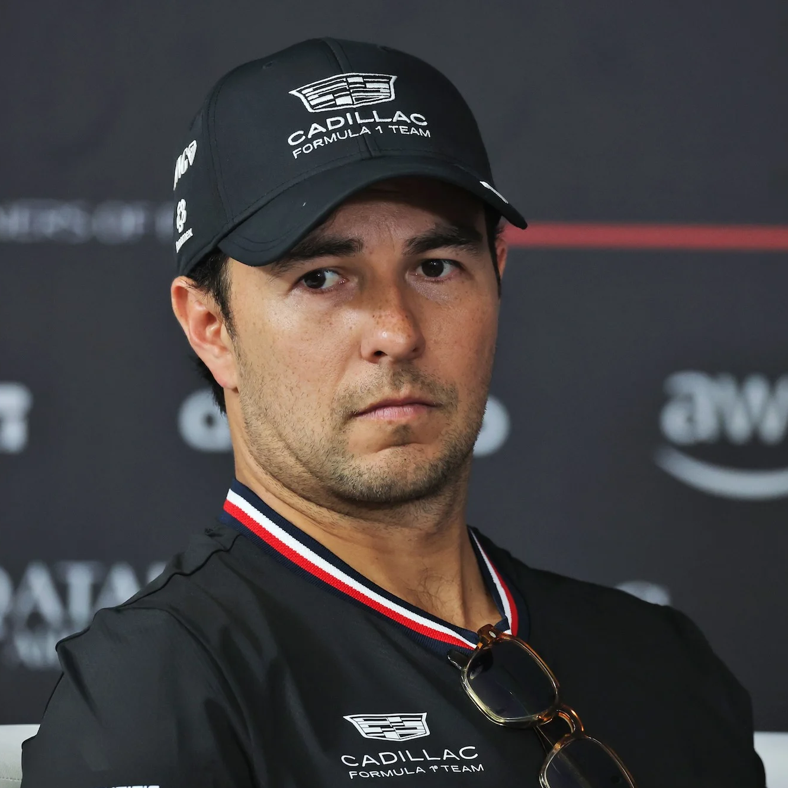
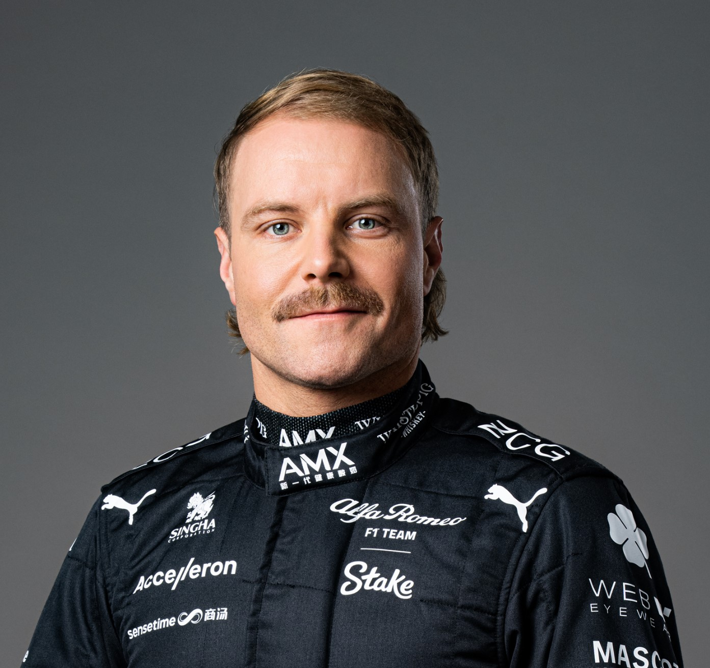
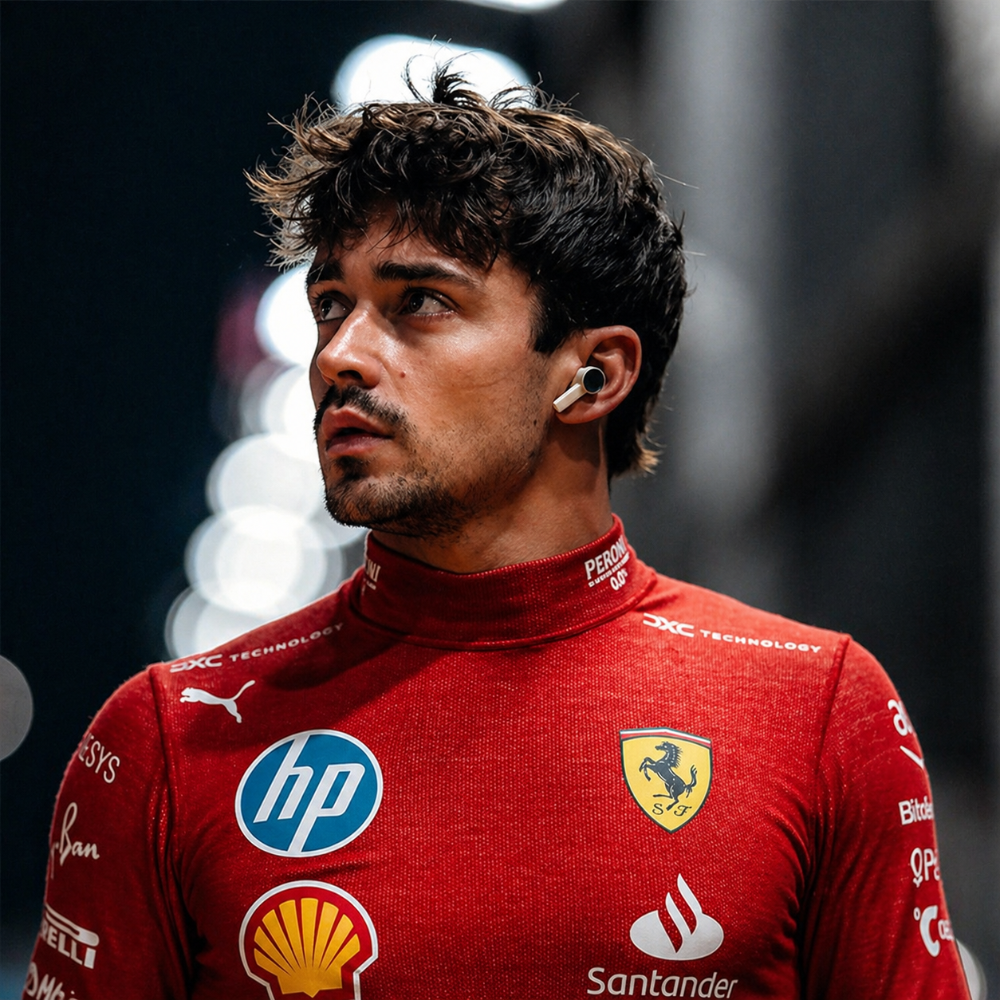
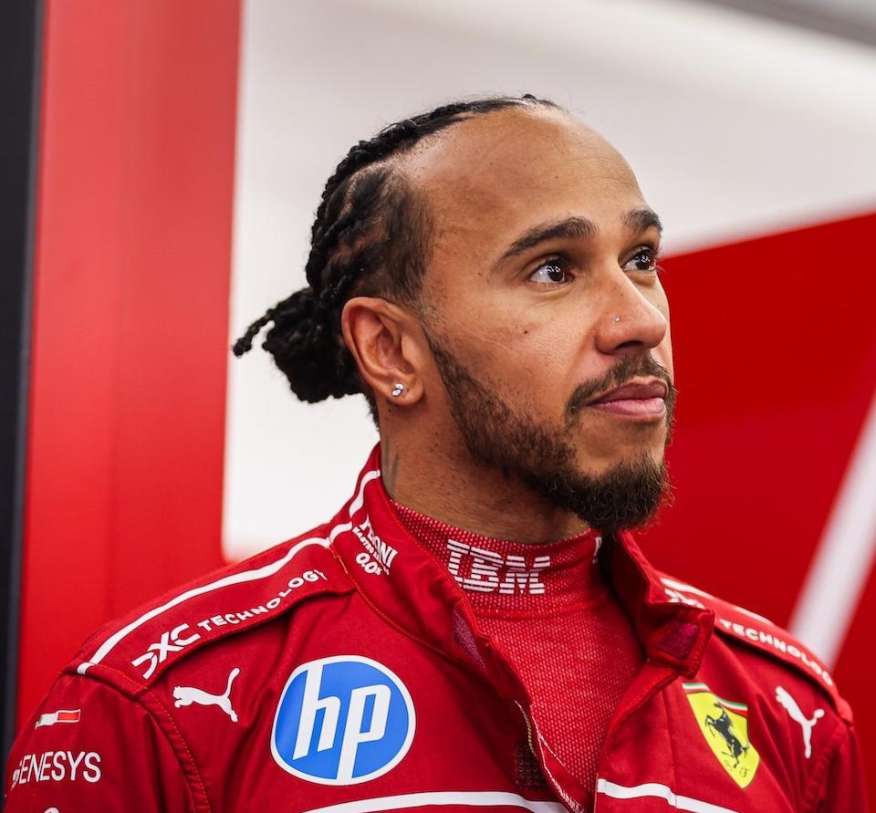
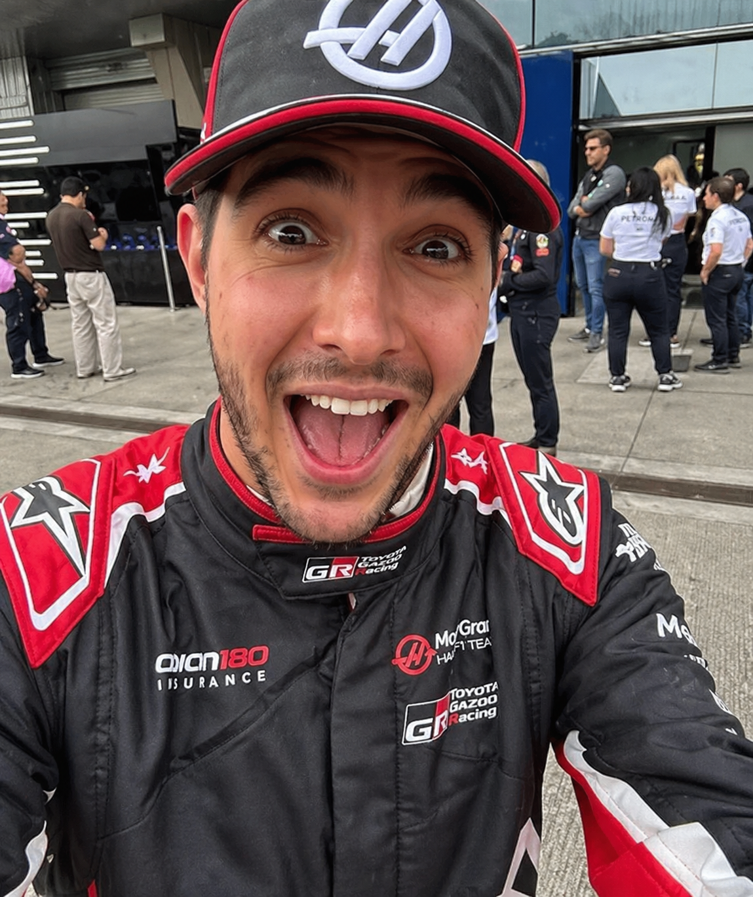
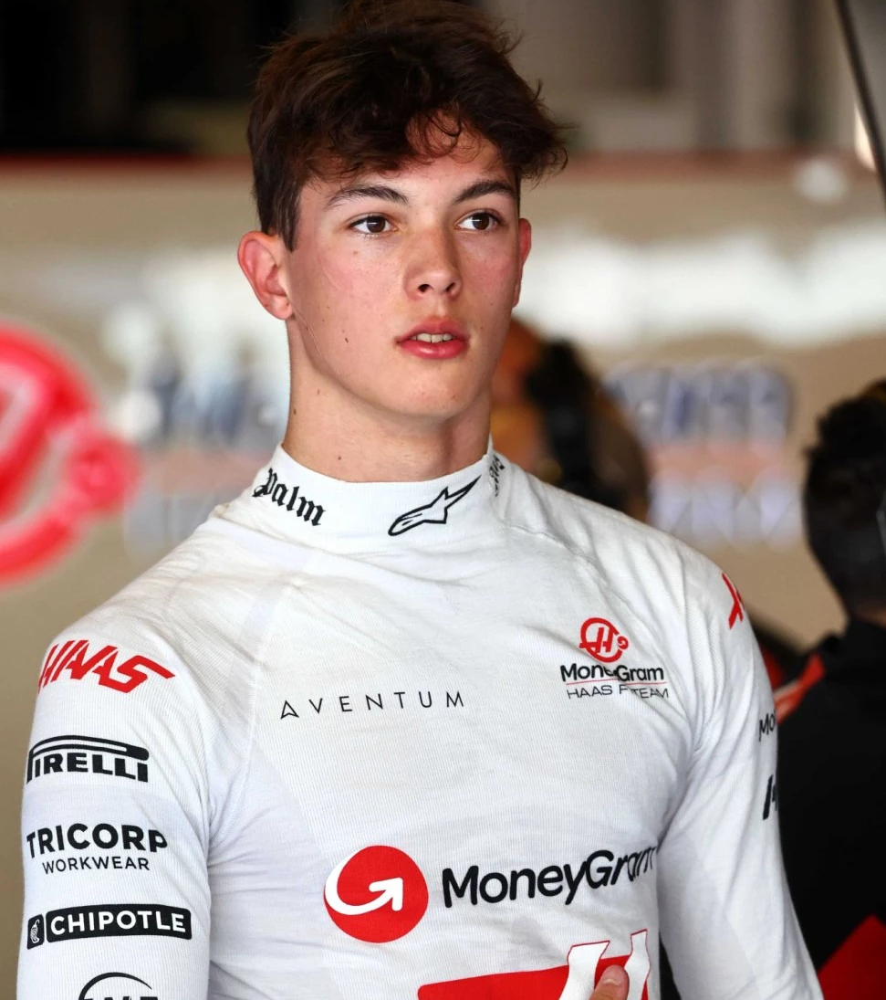

Alpine
A primeira tentativa de envolvimento da Alpine na Fórmula 1 remonta a 1968, quando o Alpine A350 foi construído, movido por um motor Gordini V8. No entanto, após o teste inicial com Mauro Bianchi em Zandvoort, o projeto foi encerrado quando foi descoberto que o motor produzia cerca de 300 cavalos em comparação com os 400 dos motores Cosworth V8. Após o projeto ser abandonado o A350 foi destruído. Em 1975, a empresa produziu o protótipo Alpine A500 para testar um motor turbo V6 de 1,5 L para a equipe de fábrica da Renault, que iria estrear na Fórmula 1 em 1977.
A Renault assumiu o controle da equipe em 2000 e conquistou grande sucesso nos anos 2000, vencendo os campeonatos de construtores e pilotos em
2005 e 2006 com Fernando Alonso. Após passar por diferentes fases e nomes (incluindo Lotus entre 2012 e 2015), a Renault voltou a comandar
oficialmente a equipe entre 2016 e 2020.
Em 2021, a equipe foi rebatizada como Alpine F1 Team para promover a marca esportiva da Renault, mantendo-se como equipe de fábrica da montadora
francesa. Na mesma temporada, conquistou sua primeira vitória sob o novo nome com Esteban Ocon no Grande Prêmio da Hungria.
Em 2022, a equipe
passou a competir como BWT Alpine F1 Team após acordo de patrocínio, e alcançou bons resultados, como o quarto lugar no campeonato de construtores.
Nos anos seguintes, a Alpine entrou em um período de instabilidade e reestruturação, com mudanças frequentes na gestão e no elenco de pilotos. Em
2023, parte da equipe foi vendida a um grupo de investidores internacionais para fortalecer seu crescimento e competitividade.
A equipe vive uma fase de reconstrução após resultados abaixo do esperado. A Renault decidiu encerrar seu programa de motores ao final de 2025,
fazendo com que a Alpine deixe de ser uma equipe “de fábrica” e passe a usar motores da Mercedes-Benz a partir de 2026

Pierre Gasly
Pierre Gasly, nascido em 7 de fevereiro de 1996, em Rouen, é um automobilista francês que compete na Fórmula 1 pela Alpine F1 Team. Estreou na categoria em 2017 pela Toro Rosso e conquistou sua primeira vitória no GP da Itália de 2020, correndo pela AlphaTauri.
Antes da F1, destacou-se nas categorias de base: foi campeão da Eurocopa de Fórmula Renault (2013) e da GP2 Series (2016), além de vice na Fórmula Renault 3.5 (2014) e na Super Fórmula Japonesa (2017). Fez parte do programa Red Bull Junior Team.
Na Fórmula 1, ganhou notoriedade ao terminar em 2º no GP do Brasil de 2019, após retornar à Toro Rosso depois de uma passagem difícil pela Red Bull Racing. Em 2020, conquistou uma vitória histórica em Monza.
Entre 2020 e 2022, liderou a AlphaTauri com consistência, superando companheiros de equipe. Em 2023, transferiu-se para a Alpine, onde rapidamente se tornou o principal piloto, superando Esteban Ocon.
Nas temporadas seguintes, mesmo com um carro pouco competitivo, manteve boas atuações e renovou contrato até 2028. Gasly segue como peça-chave no projeto da Alpine, especialmente na nova fase da equipe com motores Mercedes-Benz a partir de 2026.

Franco Colapinto
Franco Colapinto (Pilar, 27 de maio de 2003) é um piloto argentino de Fórmula 1 que atualmente compete pela equipe Alpine. Ele estreou na categoria em 2024 pela Williams, substituindo Logan Sargeant, após se destacar nas categorias de base, incluindo o título da Fórmula 4 Espanhola em 2019 e participações relevantes na Fórmula 3 e Fórmula 2.
Franco cresceu na Argentina, mas se mudou ainda jovem para a Europa para seguir carreira no automobilismo. Enfrentou desafios financeiros e pessoais, com seu pai chegando a vender a casa para apoiar sua trajetória. Seu carisma nas redes sociais ajudou a impulsionar sua popularidade, especialmente entre fãs argentinos.
Antes da F1, Colapinto teve experiências em diversas categorias, como Fórmula Renault, Endurance e Le Mans, demonstrando versatilidade. Em 2024, conseguiu pontuar pela primeira vez na F1 com um oitavo lugar no Azerbaijão.
Em 2025, foi contratado pela Alpine inicialmente como piloto reserva, mas acabou promovido ao time titular ao lado de Pierre Gasly. Apesar de dificuldades com o carro, mostrou evolução ao longo da temporada.

Aston Martin
A Aston Martin F1 Team tentou entrar na Fórmula 1 ainda nos anos 1950. Em 1951, iniciou o desenvolvimento do DB3 adaptado para a categoria, mas o projeto
foi rejeitado por ter origem em um carro esportivo. Versões posteriores, como o DB3S, chegaram a competir em eventos, com destaque para um segundo lugar
no Grande Prêmio da Austrália de 1960 (fora do calendário oficial da F1).
Em 1959, a Aston Martin viveu um grande momento ao vencer as 24 Hours of Le Mans com o modelo DBR1. No mesmo ano, decidiu entrar oficialmente na Fórmula 1
com o DBR4, mas o carro já era considerado ultrapassado. Uma versão atualizada, o DBR5, também não trouxe resultados expressivos, levando a equipe a abandonar
a categoria em 1960.
A marca retornou indiretamente à F1 em 2016, ao firmar parceria com a Red Bull Racing, tornando-se patrocinadora e colaborando no desenvolvimento do hipercarro
Valkyrie. Em 2018, passou a ser patrocinadora principal da equipe.
O retorno oficial aconteceu em 2021, após o investimento de Lawrence Stroll, que adquiriu participação na Aston Martin e transformou a equipe Racing Point na atual
Aston Martin F1 Team. O acordo inicial foi firmado por dez anos, com motores fornecidos pela Mercedes-Benz. Na temporada de 2021, a equipe contou com Sebastian Vettel
e Lance Stroll. Vettel conquistou o primeiro pódio da nova fase da equipe no Grande Prêmio do Azerbaijão.
A equipe deu um salto de desempenho em 2023, com vários pódios conquistados por Fernando Alonso, que se juntou ao time. A Aston Martin passou a figurar entre as equipes mais competitivas do grid, consolidando-se como uma forte candidata a vitórias neste ano. Mas a partir de 2024, a Aston Martin vêm sofrendo com uma extrema falta de desempenho e vem sofrendo para pontuar ou até mesmo participar de algumas corridas por conta da falta de confiabilidade do carro, embora tudo isso, a equipe ainda está confiante busca seu primeiro triunfo em um futuro próximo.

Fernando Alonso
Fernando Alonso Diaz é um automobilista espanhol nascido em Oviedo no dia 29 de julho de 1981, atualmente piloto da Aston Martin F1 Team. É bicampeão mundial de Fórmula 1 (2005 e 2006 pela Renault F1 Team) e vice-campeão em 2010, 2012 e 2013 pela Ferrari. Também venceu as 24 Hours of Le Mans (2018 e 2019) e as 24 Horas de Daytona (2019).
Começou no kart aos 3 anos e rapidamente se destacou, conquistando diversos títulos. Estreou na Fórmula 1 em 2001 pela Minardi, mas ganhou notoriedade na Renault. Em 2005, encerrou a hegemonia de Michael Schumacher e tornou-se o campeão mais jovem da época, repetindo o título em 2006.
Passou por equipes como McLaren, Renault e Ferrari, onde disputou títulos até a última corrida. Após anos difíceis na McLaren (2015–2018), deixou a F1 temporariamente e venceu no endurance.
Retornou em 2021 pela Alpine e, em 2023, ingressou na Aston Martin, conquistando 8 pódios e terminando em 4º lugar. Mesmo com resultados mais modestos em 2024 e 2025, segue competitivo e permanece na equipe para 2026, buscando novas vitórias.

Lance Stroll
Lance Stroll, nascido em 29 de outubro de 1998, em Montreal, é um automobilista canadense que compete na Fórmula 1 pela Aston Martin F1 Team. Estreou na categoria em 2017 pela Williams e, desde 2019, integra a equipe que passou de Racing Point para Aston Martin, após ser adquirida por seu pai, Lawrence Stroll.
Antes da F1, destacou-se nas categorias de base, sendo campeão da Fórmula 4 Italiana (2014), da Toyota Racing Series (2015) e da Fórmula 3 Europeia (2016). Também fez parte da Ferrari Driver Academy e da Williams Academy.
Na Fórmula 1, conquistou seu primeiro pódio em 2017, no GP do Azerbaijão, tornando-se um dos mais jovens a alcançar o feito. Em 2020, obteve sua primeira pole position no GP da Turquia. Ao longo da carreira, teve desempenhos irregulares, frequentemente sendo comparado a seus companheiros de equipe, como Sergio Pérez e Fernando Alonso.
Desde 2021 na Aston Martin, Stroll mantém consistência, embora com resultados abaixo dos companheiros. Em 2023, alcançou sua melhor posição no campeonato (10º). Nas temporadas seguintes, enfrentou dificuldades com o desempenho do carro, mas renovou contrato de longo prazo e segue na equipe, buscando melhores resultados na Fórmula 1.

Audi
A Audi F1 Team é a oficial da Audi na Fórmula 1, estreiando em 2026. Baseada em Hinwil, na Suíça, a equipe surgiu a partir da aquisição total da Sauber pela montadora alemã em 2024, após anos de parceria e transição.
Originalmente fundada como Sauber em 1993, a estrutura passou por fases como BMW Sauber e Alfa Romeo Racing, mantendo sua base na Suíça. Após o fim da parceria com a Alfa Romeo em 2023, a equipe adotou nomes temporários até sua transformação definitiva em equipe de fábrica da Audi.
A Audi anunciou sua entrada na F1 em 2022, inicialmente como fornecedora de motores, e ao longo dos anos seguintes adquiriu participação total na Sauber. O projeto inclui o desenvolvimento próprio de unidades de potência pela Audi Formula Racing GmbH.
Para sua estreia, a equipe vem montando uma estrutura forte, com nomes como Mattia Binotto na liderança técnica e Jonathan Wheatley na gestão esportiva. Entre os pilotos confirmados para a transição estão Nico Hülkenberg e Gabriel Bortoleto.

Gabriel Bortoleto
Gabriel Bortoleto é um piloto brasileiro de Fórmula 1 nascido em Osasco, em 2004. Ele ganhou destaque ao conquistar os títulos da Fórmula 3 (2023) e da Fórmula 2 (2024), ambos como estreante — um feito raro que chamou atenção no automobilismo.
Bortoleto começou no kart ainda criança e se mudou cedo para a Europa para seguir carreira. Antes da F1, passou por categorias como Fórmula 4 e Fórmula Regional, evoluindo até se tornar campeão nas principais divisões de acesso. Entre 2023 e 2024, integrou o programa de jovens pilotos da McLaren.
Ele estreou na Fórmula 1 em 2025 pela Sauber, equipe que depois se transformaria na Audi F1 Team. Em sua temporada de estreia, enfrentou dificuldades típicas de um carro pouco competitivo, mas conseguiu pontuar e mostrar evolução ao longo do ano.
Para 2026, Bortoleto segue como piloto titular da Audi, ao lado de Nico Hülkenberg, participando do início do projeto oficial da montadora na Fórmula 1.

Nico Hülkenberg
Nico Hülkenberg é um piloto alemão nascido em 19 de agosto de 1987, em Emmerich am Rhein. Conhecido pelo apelido “Hulk”, construiu sua carreira com base em c onsistência e forte desempenho em classificações.
Iniciou no kart ainda jovem e rapidamente se destacou, conquistando títulos nacionais. Sua ascensão nas categorias de base foi marcante: venceu a Fórmula BMW, brilhou na A1 Grand Prix e sagrou-se campeão da GP2 em 2009, consolidando-se como um dos principais talentos de sua geração.
Estreou na Fórmula 1 em 2010 pela Williams F1 Team, onde conquistou uma pole position no GP do Brasil. Ao longo da carreira, passou por equipes como Force India, Renault F1 Team e Haas F1 Team, destacando-se pela regularidade, apesar da ausência de vitórias na categoria.
Fora da F1, teve um dos maiores feitos de sua carreira ao vencer as 24 Horas de Le Mans em 2015, demonstrando sua versatilidade.
Após períodos como titular e reserva, retornou ao grid e seguiu competitivo. Em 2025, voltou à Sauber (futura Audi), onde inclusive conquistou seu primeiro pódio na Fórmula 1, reforçando sua reputação como um dos pilotos mais sólidos do grid.

Cadillac
A Cadillac Formula 1 Team é uma equipe e construtora estadunidense que estreou na Fórmula 1 em 2026, sendo ligada à General Motors por meio da marca Cadillac. O projeto nasceu da iniciativa de Michael Andretti, com apoio de Mario Andretti, e passou por um longo processo até ser aceito no grid.
Inicialmente planejada como Andretti Cadillac, a entrada enfrentou resistência de equipes e da Formula One Group. Apesar disso, o projeto evoluiu com forte estrutura nos Estados Unidos e na Inglaterra, incluindo base em Silverstone. Com mudanças internas e novos investidores, a equipe acabou sendo aprovada oficialmente para competir a partir de 2026, já como Cadillac.
Nos primeiros anos, utiliza unidades de potência da Scuderia Ferrari, enquanto desenvolve seus próprios motores por meio da GM, com previsão de se tornar fabricante completa até o fim da década. A aprovação para produzir motores próprios veio da FIA para 2029.
Para sua estreia, a equipe contratou pilotos experientes como Sergio Pérez e Valtteri Bottas, apostando em consistência enquanto constrói sua competitividade na categoria.

Sergio Pérez
Sergio Pérez, conhecido como “Checo”, é um piloto mexicano de Fórmula 1 nascido em Guadalajara em 1990. Estreou na categoria em 2011 pela Sauber e construiu uma carreira marcada por consistência, gestão de pneus e forte leitura de corrida.
Iniciou no kart ainda criança e passou por categorias como Fórmula BMW e GP2, onde foi vice-campeão. Na F1, ganhou destaque em 2012 com três pódios pela Sauber, o que o levou à McLaren em 2013, embora sem grande sucesso. Seu melhor momento veio na Force India, onde se consolidou como um dos principais nomes do pelotão intermediário, somando diversos pódios e desempenhos consistentes.
Em 2020, conquistou sua primeira vitória no GP de Sakhir pela Racing Point. No ano seguinte, juntou-se à Red Bull, tornando-se peça importante nas campanhas de títulos e alcançando o vice-campeonato em 2023, sua melhor temporada.
Após deixar a equipe em 2024, Pérez foi anunciado como piloto da Cadillac para 2026, marcando um novo capítulo em sua carreira. Fora das pistas, é casado e pai de quatro filhos, mantendo forte ligação com sua família e suas origens no automobilismo.

Valtteri Bottas
Valtteri Bottas é um piloto finlandês nascido em 28 de agosto de 1989, em Nastola. Conhecido pela consistência e estilo técnico, competiu na Fórmula 1 entre 2013 e 2024 por equipes como Williams, Mercedes e Alfa Romeo (Sauber). Foi vice-campeão mundial em 2019 e 2020, seus melhores anos na categoria.
Iniciou no kart ainda criança e conquistou títulos importantes nas categorias de base, como a GP3 Series de 2011. Estreou na F1 pela Williams, onde se destacou em 2014 com vários pódios. Seu auge veio na Mercedes (2017–2021), período em que venceu corridas e teve papel importante como segundo piloto ao lado de Lewis Hamilton.
Após deixar a Mercedes, assumiu papel de liderança na Alfa Romeo, mas enfrentou limitações de desempenho. Em 2025, retornou como piloto reserva da Mercedes. Fora das pistas, Bottas também se destaca pelo interesse em ciclismo e atividades esportivas.
Em 2026, voltou ao grid como titular pela Cadillac Formula 1 Team, marcando um novo capítulo em sua carreira ao lado de Sergio Pérez.

Scuderia Ferrari
A Scuderia Ferrari é a equipe mais tradicional e vitoriosa da Fórmula 1, participando da categoria desde sua criação, em 1950. Fundada por Enzo Ferrari em 1929, inicialmente ligada à Alfa Romeo, tornou-se independente após a Segunda Guerra Mundial e passou a construir seus próprios carros.
Ao longo da história, a Ferrari acumulou recordes impressionantes: múltiplos títulos mundiais de pilotos e construtores, centenas de vitórias e mais de mil Grandes Prêmios disputados — sendo a única equipe presente em todas as temporadas da F1.
Nos anos 1950, destacou-se com nomes como Alberto Ascari, conquistando títulos consecutivos. Já nos anos 2000, viveu sua era mais dominante com Michael Schumacher, vencendo campeonatos consecutivos entre 2000 e 2004.
Após períodos de altos e baixos, a equipe voltou a ser competitiva em diferentes momentos das décadas de 2010 e 2020, frequentemente brigando por vitórias e títulos, embora sem conquistar o campeonato desde 2008 (construtores) e 2007 (pilotos).
Com sede em Maranello, na Itália, a Ferrari mantém sua identidade histórica e continua sendo uma das equipes mais icônicas e influentes da Fórmula 1.

Charles Leclerc
Charles Leclerc é um piloto monegasco de Fórmula 1 que compete pela Scuderia Ferrari. Considerado um dos principais talentos da sua geração, destacou-se rapidamente nas categorias de base ao conquistar os títulos da GP3 (2016) e da Fórmula 2 (2017).
Filho do ex-piloto Hervé Leclerc, Charles cresceu no automobilismo e teve forte influência de Jules Bianchi, seu mentor. Sua trajetória pessoal foi marcada por perdas importantes, mas ele manteve o foco na carreira.
Estreou na Fórmula 1 em 2018 pela Sauber, chamando atenção pelo desempenho consistente. Em 2019, foi promovido à Ferrari, onde conquistou suas primeiras vitórias — incluindo Monza — e rapidamente se firmou como líder da equipe.
Ao longo dos anos, Leclerc acumulou poles, vitórias e pódios, sendo reconhecido por sua velocidade em classificação. Em 2022, foi vice-campeão mundial, chegando a disputar o título nas primeiras etapas. Já em temporadas seguintes, enfrentou altos e baixos devido a limitações do carro e erros estratégicos.
Mesmo assim, permanece como peça central do projeto da Ferrari e um dos principais nomes da Fórmula 1 atual.

Lewis Hamilton
Sir Lewis Carl Davidson Hamilton (Stevenage, 7 de janeiro de 1985) é um automobilista britânico e um dos maiores nomes da história da Fórmula 1. Sete vezes campeão mundial (2008, 2014, 2015, 2017, 2018, 2019 e 2020), ele divide o recorde de títulos com Michael Schumacher e é amplamente reconhecido como um dos pilotos mais dominantes de todos os tempos.
Atualmente competindo pela Ferrari, Hamilton também é o recordista de vitórias na categoria, com 105 triunfos, além de liderar estatísticas como poles, pódios, voltas lideradas e pontos acumulados ao longo da carreira.
Desde cedo, Hamilton demonstrava admiração por Ayrton Senna, seu maior ídolo. Um dos momentos mais marcantes de sua carreira aconteceu em 2017, quando igualou o número de poles do brasileiro e recebeu, das mãos da família de Senna, um capacete histórico — gesto que o emocionou profundamente.
Em 2021, foi condecorado como cavaleiro pelo então Príncipe de Gales, hoje Charles III, pelos seus serviços ao automobilismo. No ano seguinte, recebeu também o título de cidadão honorário do Brasil.

Haas
A Haas F1 Team, fundada por Gene Haas em 2014, estreou na Fórmula 1 em 2016 após adiar seus planos iniciais. É a primeira equipe americana na categoria desde a Haas Lola que competiu nos campeonatos de 1985 e 1986. A equipe Haas Lola era de propriedade do ex-chefe da McLaren Teddy Mayer e Carl Haas, que não tem nenhuma relação com Gene Haas. Possui sede em Kannapolis (EUA) e uma base europeia em Banbury, além de forte parceria técnica com a Ferrari e chassis desenvolvidos pela Dallara.
Na estreia, pontuou com Romain Grosjean, mostrando competitividade inicial. O auge veio em 2018, quando terminou em 5º no campeonato de construtores, com bons resultados de Kevin Magnussen e Grosjean. Porém, a equipe enfrentou oscilações nos anos seguintes, com queda de desempenho e mudanças constantes de patrocinadores.
Em 2020, marcou poucos pontos e protagonizou um dos momentos mais impactantes da F1 recente: o grave acidente de Grosjean no Bahrein, do qual sobreviveu graças ao halo. Em 2021, iniciou uma fase de reconstrução com Mick Schumacher e Nikita Mazepin, mas sem resultados expressivos.
A partir de 2022, passou por reestruturações, incluindo o retorno de Magnussen e mudanças internas. Em 2024, firmou parceria com a Toyota Gazoo Racing, marcando o retorno da Toyota à F1 em colaboração técnica.
Para 2025–2026, a equipe adotou o nome Toyota Gazoo Racing Haas F1 Team, com Esteban Ocon e Oliver Bearman como pilotos, entrando em uma nova fase focada em desenvolvimento e maior competitividade.

Esteban Ocon
Esteban Ocon é um piloto francês de Fórmula 1, nascido em 1996, que atualmente compete pela Haas F1 Team. Estreou na categoria em 2016 pela Manor e fez parte do programa de jovens pilotos da Mercedes. Antes da F1, destacou-se ao ser campeão da Fórmula 3 Europeia (2014) e da GP3 (2015).
De origem humilde, sua família chegou a viver em uma van para financiar sua carreira no kart. Na F1, ganhou destaque na Force India (2017–2018), onde teve consistência e pontuou regularmente. Após um ano como reserva da Mercedes (2019), retornou como titular pela Renault em 2020, conquistando seu primeiro pódio.
Seu maior momento veio pela Alpine, ao vencer o GP da Hungria de 2021, sua primeira vitória na F1. Permaneceu na equipe até 2024, com desempenhos consistentes, apesar de conflitos internos e irregularidade.
Em 2025, transferiu-se para a Haas, onde passou a correr ao lado de Oliver Bearman. Teve uma temporada irregular, mas com alguns bons resultados pontuais. Em 2026, segue na equipe, buscando maior consistência e evolução dentro do grid.

Oliver Bearman
Oliver Bearman é um piloto britânico de Fórmula 1 que compete pela Haas desde 2025 e integra a Ferrari Driver Academy. Nascido em 2005, destacou-se rapidamente nas categorias de base, sendo campeão da Fórmula 4 Italiana e da ADAC F4 em 2021 — feito raro que consolidou sua reputação como promessa do automobilismo.
Ele estreou na F1 em 2024 pela Ferrari, substituindo Carlos Sainz Jr. no GP da Arábia Saudita, tornando-se um dos poucos pilotos a debutar diretamente por uma equipe de ponta. No mesmo ano, também correu pela Haas como substituto, tornando-se o primeiro estreante a pontuar por duas equipes diferentes em uma única temporada.
Em 2025, assumiu vaga titular na Haas ao lado de Esteban Ocon. Em sua temporada de estreia completa, mostrou consistência e bom ritmo, terminando à frente do companheiro no campeonato. Seu melhor resultado foi um quarto lugar, além de uma sequência de corridas pontuando.
Agora, em 2026, manteve desempenho competitivo, somando pontos logo nas primeiras etapas. Apesar de um forte acidente no Japão, sem consequências graves, reforçou sua imagem como piloto rápido e resiliente.
